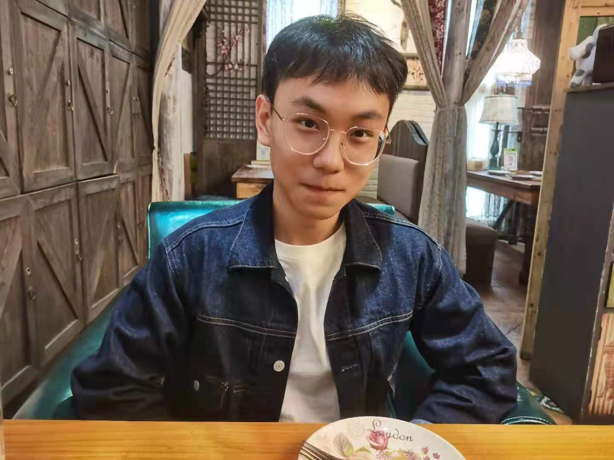

Yuting He 何宇霆
|
School of Computer Science and Engineering, Southeast University |
 |
 Google Scholar
Google Scholar Github
Github ResearchGate
ResearchGate Curriculum Vitae
Curriculum VitaeBiography
Yuting He has achieved Ph.D. degree from the School of Computer Science and Engineering, Southeast University supervised by Guanyu Yang. He was a visiting student at Western University supervised by Shuo Li and Boyu Wang. He received his bachelor degree from Hefei University of Technology. Drawing upon biomedical informatics, computer vision, and deep learning, his research focuses on developing novel methodologies to learn more efficient extraction of knowledge in medical information for computer-aided diagnosis, surgery, and medical imaging. In addition to 2 Chinese patents, Yuting He has published 22 peer-reviewed journal/conference articles, including CVPR, ECCV, TNNLS, MedIA, TIP, J-BHI, IJCAI, MICCAI, and IPMI. Yuting He was the organizer of the MICCAI-KiPA22 challenge, and provided professional service for J-BHI, CVPR in 2021-2024, ICCV in 2021-2023, MICCAI in 2020-2022, AAAI in 2022-2024, and NeruIPS in 2023.News
- [2023.12] I have graduated from Southeast University! My PhD thesis is "Data-Efficient Learning Algorithm in Medical Image Segmentation" (in Chinese).
- [2023.12] 1 papers has been accepted by J-BHI 2023
- [2023.11] I achieved the Bao Gang Outstanding Student Award which is one of the top educational scholarships in China (Only 500 students in China each year)
- [2023.11] Our paper “Segment Anything in Medical Images” has been formally accepted by Nature Communications (Impact Factor: 17.0) [code]
- [2023.09] 1 papers has been accepted by ICCV 2023
- [2023.06] 2 papers has been accepted by MICCAI 2023
- [2023.02] 1 paper has been accepted by CVPR 2023
- [2023.02] 1 paper has been accepted by JBHI
- [2023.02] 1 paper has been accepted by KBS
- [2022.08] 1 paper has been accepted by TNNLS
- [2022.06] MICCAI 2022 KiPA challenge is in full swing.
- [2022.06] 4 papers are accepted by MICCAI 2022.
- [2022.05] 1 paper is accepted by IJCAI
- [2021.10] 1 paper is accepted by TIP
Awards and Honors
- 2023, Bao Gang Outstanding Student Award (宝钢优秀学生奖, 500 students in China each year)
- 2021, 2023, National Scholarship
- 2023, Merit student of Jiangsu Province
- 2022, Southeast University Good Youth Award (东大好青年, 10 students in SEU each year)
- 2022, Southeast University Graduate Student of the Year (正·青年, 10 graduated students in SEU each year)
- 2019-2021, Merit student of Southeast University
- 2020, Southeast University Doctoral Freshman Award
- 2018, Outstanding Graduate, Anhui Province
- 2018, Outstanding Graduate, Hefei University of Technology
Selected Publications [Google Scholar]
☆ Foundation and Pre-training Models for Biomedical Data
|
Geometric Visual Similarity Learning in 3D Medical Image Self-supervised Pre-training. |
|
Knowledge Boosting: Rethinking Medical Contrastive Vision-Language Pre-training. |
|
Segment Anything in Medical Images. |
☆ Representation- and Annotation-Efficient Biomedical Image Analysis
|
Learning Better Registration to Learn Better Few-Shot Medical Image Segmentation: Authenticity, Diversity, and Robustness. |
|
Few-shot Learning for Deformable Medical Image Registration with Perception-Correspondence Decoupling and Reverse Teaching. |
|
Deep complementary joint model for complex scene registration and few-shot segmentation on medical images. |
|
Examinee-Examiner Network: Weakly Supervised Accurate Coronary Lumen Segmentation Using Centerline Constraint. |
|
Thin Semantics Enhancement via High-Frequency Priori Rule for Thin Structures Segmentation. |
|
XMorpher: Full Transformer for Deformable Medical Image Registration via Cross Attention. |
|
MNet: Rethinking 2D/3D Networks for Anisotropic Medical Image Segmentation. |
☆ AI-assisted Surgery/Diagnosis/Prognosis
|
Meta grayscale adaptive network for 3D integrated renal structures segmentation. |
|
Dense biased networks with deep priori anatomy and hard region adaptation: Semi-supervised learning for fine renal artery segmentation. |
|
Multi-Task Learning for Pulmonary Arterial Hypertension Prognosis Prediction via Memory Drift and Prior Prompt Learning on 3D Chest CT. |
|
EnMcGAN: Adversarial Ensemble Learning for 3D Complete Renal Structures Segmentation. |
|
CPNet: cycle prototype network for weakly-supervised 3D renal compartments segmentation on CT images. |
Services
Workshop/Challenge Organizers:
-
Co-organizer of MICCAI-KiPA22 challenge.
Conference Reviewer:
-
MICCAI 2020-2022, AAAI 2022-2024, CVPR 2021-2024, ICCV 2021-2023, NeurIPS 2023.
Journal Reviewer:
-
IEEE Journal of Biomedical and Health Informatics (J-BHI)